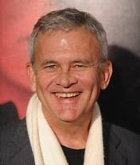
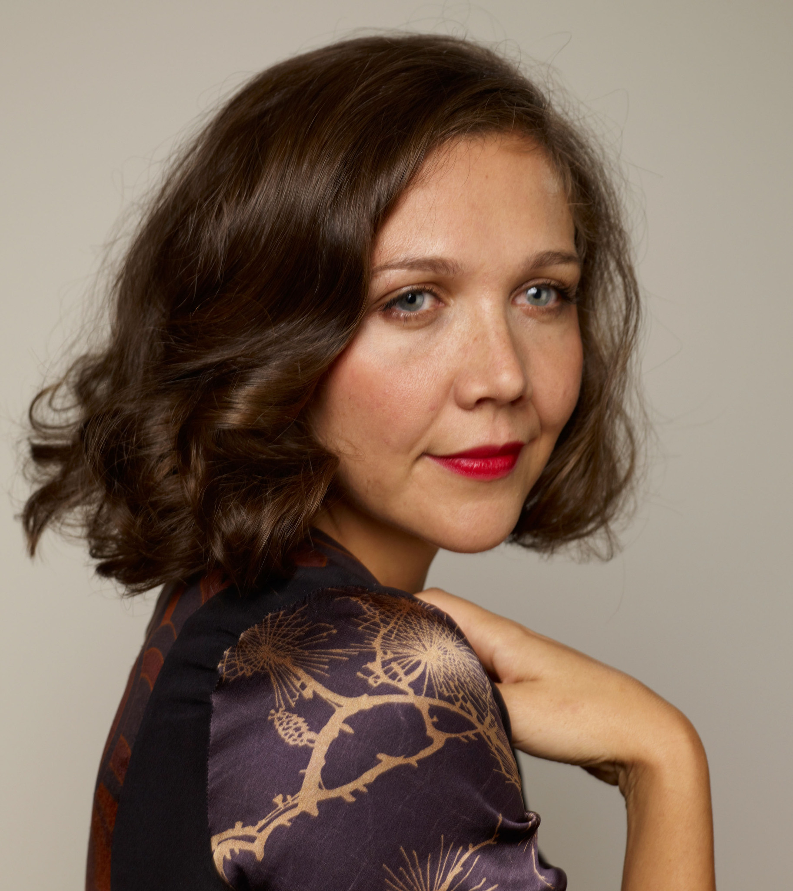

Elenco
Atores escalados para atuar no filme.


James Duval
interpretando Frank
Coadjuvante
Manipulado Morto

Mary Mcdonnell
interpretando Rose Darko
(Mãe de Donnie)

Holmes Osborne
interpretando Eddie Darko
(Pai de Donnie)

Maggie Gyleenhaal
interpretando Elizabeth Darko
(Irmã de Donnie)